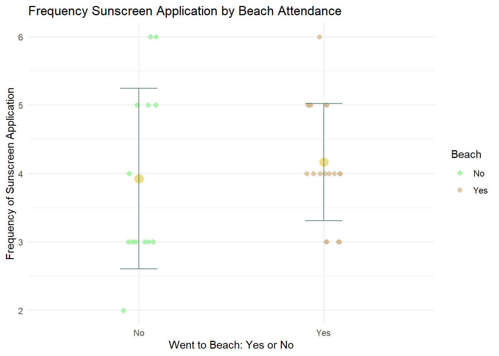

https://github.com/nathanseaway/Homework_3.git
To summarize my data I can take the mean of the number of times I apply sunscreen (response variable) compared between the two categorical groups: went to beach and did not go to beach (predictor variable). This allows me to compare the relation between going to the beach in a day and applying sunscreen, as I believe I apply sunscreen more on days when I go to the beach.
Figure 1. Distribution and means of frequency of sunscreen application by attendance to the beach (yes or no). Green points represent sunscreen application frequency for days where beach was not attended; brown to days where it was. Graph displays means and standard deviations of sunscreen application for both groups. Data from “sunscreen_fixed.csv” by Nathan Seaway from personal experience.
| Table of Sunscreen Application by Beach Attendance | ||
|---|---|---|
| Went to Beach | Mean Sunscreen Application | Standard Deviation |
| No | 3.9 | 1.3 |
| Yes | 4.2 | 0.9 |
For my personal data, an affective visualization could represent the data that is displayed in my graph, but in a way that uses stylistic choices to demonstrate meaning behind the data. I think this would demonstrate differences in the mean, the standard deviation, and the general distributions of these two groups. I would want it to capture the larger skew of the no group as well as the slightly lower mean. I think I want my affective visualization to be a sort of sculptural representation of my data that plays around with literal objects to represent data. I’m thinking of using empty sunscreen bottles, cut to different sizes and then paint to represent the data.

Sketch of Affective Data Visualization: Sunscreen Application My piece displays the comparison between the frequency of sunscreen application between days when I go vs don’t go to the beach. It attempts to demonstrate differences in the mean frequency as well as differences in ranges as well as data clustering between these two groups. My piece draws inspiration from the Dear Data Project, as it takes often literal depictions of objects or things in order to express or communicate data. My project attempts to light heartedly examine my sunscreen usage and its relation to me often going to the beach through data with a very literal sunscreen bottle. I worked with acrylic paint to make data points and means, physical objects such as sand and sunscreen bottles to create the background (which connects the subject matter to the data) and to display the range of data. To create this piece I gathered sand from Devreux beach (the beach I most frequented during the data collection period) and glued it to a cardboard background. I then cut an empty sunscreen bottle to size for each group and used acrylic paint to paint the data points/mean.
The paper aims to determine if there are differences in recorded age, weight, and length of the species Gobio huanghensis, between two different populations: the Gansu and Ningxia sections of the Yellow River in China. A Mann-Whitney U test was used to determine if there was a significant difference in weight as well as length between the two populations. The predictor variable was population location, either Gansu or Ningxia, and the response variables in the two tests were the median weight of the fish and the median length.
The authors did a decent job displaying the data from the two tests in the histograms of figure 2. The distribution bins seem logically sized and the y-axis displaying proportion of population in that bin size is clear and easy to understand, additionally the groupings of the two populations by color in the graph makes it easy to read. To improve this figure, the authors should have displayed the medians of each group for that variable (with standard deviation) to better display the information used in the Mann-Whitney test as well as the key question of interest: difference in central tendency.
I think the author’s did a good job handling visual clutter. They removed graph lines, minimized color usage, and avoided excessive word usage in the axis labels. Overall it makes very sleak and easy to read figures, where there is a high data to ink ratio where a lot of information is transmitted with very minimal ink.
In order to improve this figure, I would recommend the author first adds a point or line to each histogram that represents the median of each group of fish. So there would be two lines/points added to the histogram of length one for each population median. Doing so would better demonstrate the central tendency of groups and allow the reader to see how these differ and thus how likely there is to be a statistical difference in these groups. I think this median could also include error bars for standard deviation as this relays more statistical information that was used in running their test. Additionally, I would maybe change the y-axis to “proportion of each population (%)” to make it less ambigous whether this labels describes % out of all the fish or just their population. Finally I think providing a sample size (such as n=) to each of the graphs would help the reader understand the significance of the distribution.